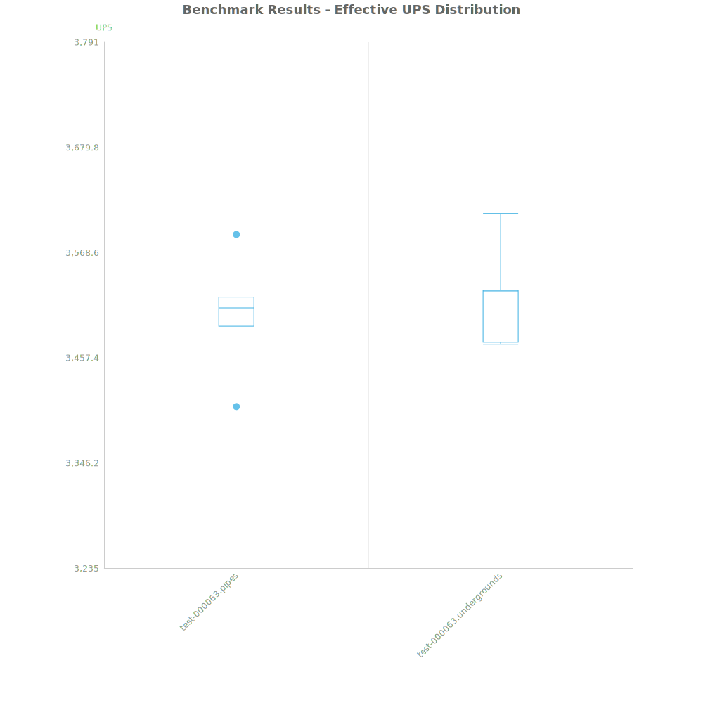

No, there is no significant difference in performance
The test consists of giant blocks of pipes, just under the maximum 320x320 size allowed by the fluid system in Factorio 2.0. In the underground case, a vertical line of underground pipes covering the full xy area was used. A single offshore pump was connected at one end, and an infinity pip connected at the other end.
This was then cloned a lot of times for both scenarios.

| Metric | Description |
|---|---|
| Mean UPS | Updates per second - higher is better |
| Mean Avg (ms) | Average frame time - lower is better |
| Mean Min (ms) | Minimum frame time - lower is better |
| Mean Max (ms) | Maximum frame time - lower is better |
| Save | Avg (ms) | Min (ms) | Max (ms) | UPS | Execution Time (ms) | % Difference from base |
|---|---|---|---|---|---|---|
| test-000063.pipes | 0.286 | 0.156 | 2.191 | 3503 | 8565 | 0.00% |
| test-000063.undergrounds | 0.284 | 0.152 | 1.570 | 3522 | 8518 | 0.55% |
All maps will be uploaded here.
No reason to care about using or not using underground pipes.